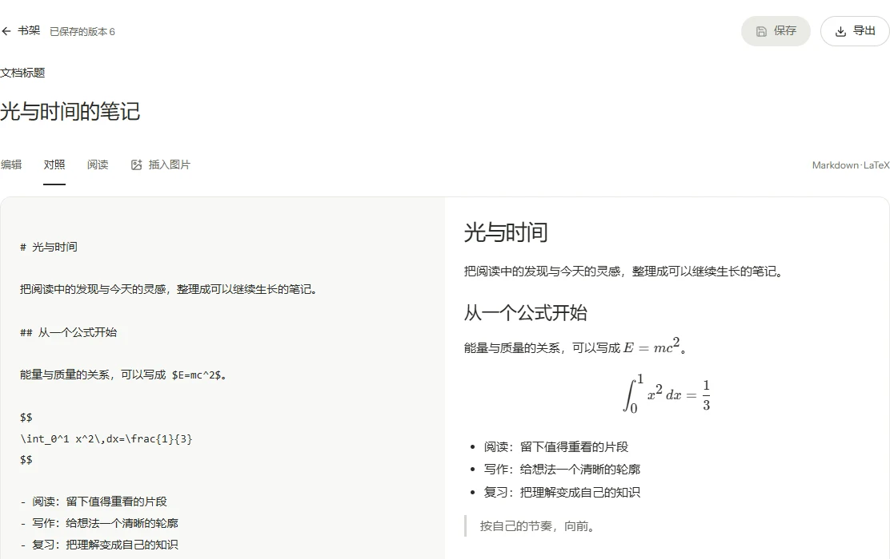
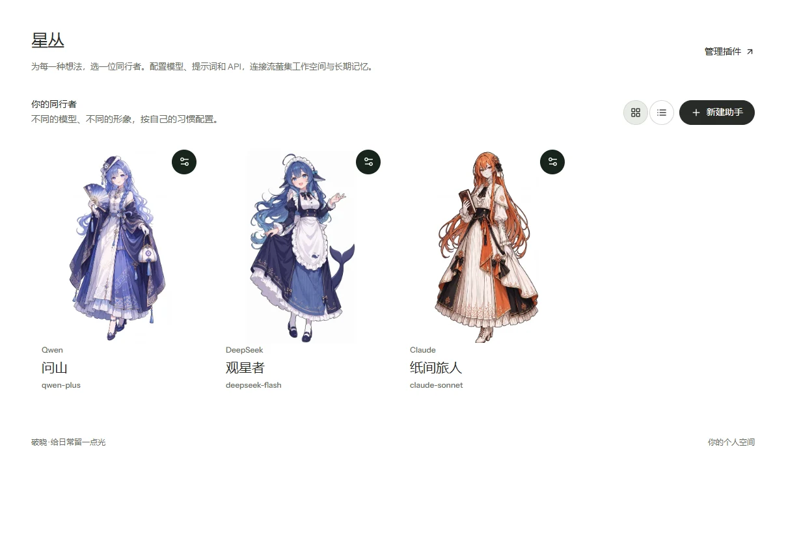
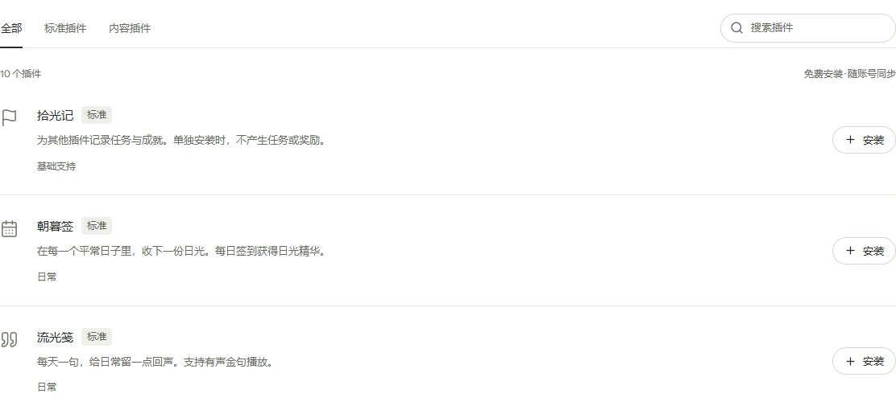

用 Markdown 写下想法，用 LaTeX 留住公式。收集书籍与文档，识别 PDF 和图片，在文字里插入自己的图片。每个账号默认拥有 64 MB 书架空间。

破晓是一款个人工具集。阅读、写作、背词，与 AI 一起整理想法。按需安装插件，把喜欢的日常放在一起。
Windows · Android · Web
同一个账号，接着上次的进度。
用 Markdown 写下想法，用 LaTeX 留住公式。收集书籍与文档，识别 PDF 和图片，在文字里插入自己的图片。每个账号默认拥有 64 MB 书架空间。

选择模型，配置自己的 API 与提示词。让助手在指定的流萤集工作空间阅读、编辑文档，用记忆库接续对话；读取、修改与保存，都有迹可循。

学习、测试、复习，共用一份词汇进度。有音标就显示，点一下听朗读。桌面端还可进入飞速记忆，在全屏节奏中练习拼写。

签到、拾句、听歌、集卡，也有下载、密码管理与模型观察。更多插件还会陆续到来；现在，先从商城选出你需要的那几个。

把破晓放在桌面或口袋里。
也可以直接打开网页版，随时回来。
安装 1.4.0 后，可在客户端内检查后续更新。
Android 首次安装需允许浏览器安装此应用。